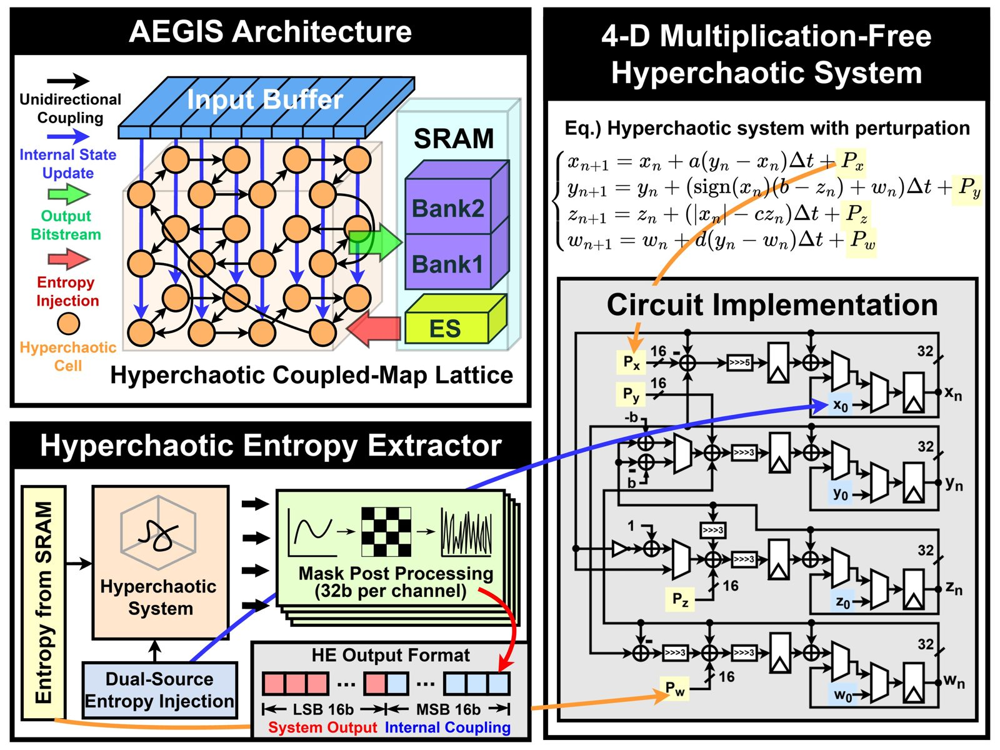
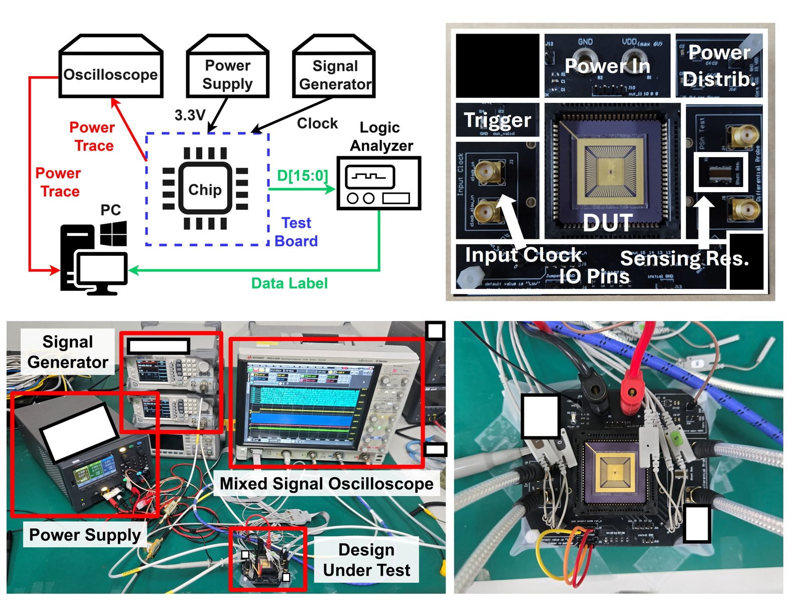

AEGIS: a 691.2 Gb/s all-digital random number generator
Security for AI and IoT devices needs fast, cheap randomness: for keys, authentication, and masking against side-channel attacks. The fastest true random number generators today use mixed-signal entropy sources. They must be recalibrated or redesigned at every new process node, and the SRAM next to them only stores data.
AEGIS takes a different route. Standard compiler-generated SRAM supplies entropy at power-up and then stores the output. A lattice of 24 four-dimensional hyperchaotic cells, built with no multipliers, turns that entropy into a fast random stream. Because the whole design is synthesizable, it can move to a new process as a soft IP with no analog calibration.

| Technology | TSMC 40 nm CMOS, all-digital |
|---|---|
| Peak throughput | 691.2 Gb/s at 1.1 V, 450 MHz |
| Best energy efficiency | 40.2 fJ/bit at 0.6 V, 175 MHz (full chip, including SRAM) |
| Randomness | Passes all NIST SP 800-22 and SP 800-90B tests; IID min-entropy above 0.994 |
| Side-channel leakage | None detected: TVLA |t| < 4.5 over 1M power traces; CNN and Transformer attacks at chance level |
| Core | 0.44 × 0.44 mm², 213.4K gates |
I designed the 4-layer test PCB myself, with on-board regulators, current-sensing shunts, and 50 Ω paths for clock and probes. The oscilloscope records the output bits and the power trace together, so each trace is labeled with its data for the security tests.
